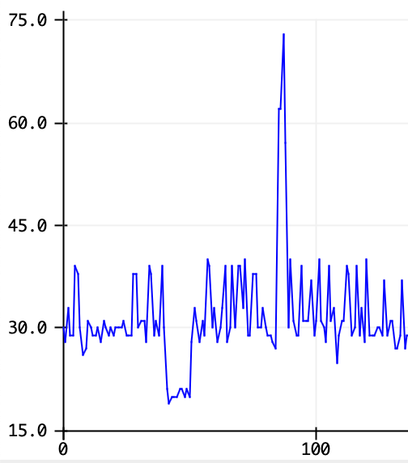
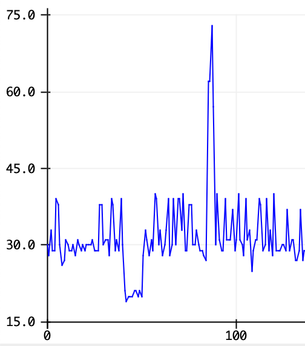
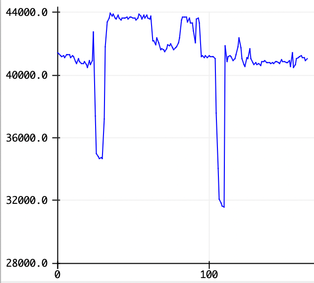

This weeks assignment was to make a capacitor sensor along with another sensor in some project. I explored both concepts. I first started to come up with an idea of whats the best way to create my project, in that I wanted to make use of old items I created, particularly my cup. I knew that the capacitor can detect if theres things between two modules so I decided to use that in conjucntion with a photoresistor.
To give a general idea of the project is that we would have a cup, my pink cup from the week before, and put a photoresistor in the cup to detect if the cup gets covered or darker, and a capacitor to detect if items are inside the actual cup. This would act as a redudant system that would detect whatever an item was in the cup or if it was covered.
Some of the materials that I needed for this was clearly a photoresistor, a breadboard, a lot of wires, 1 led and 2 100 ohms resistors.
This is what the final layout looked like:

First and foremost, I had to ensure there was a valid connection that was separate for both of my capacitors and also for my photoresistor, which I was able to do separately in the digital pin section. I also an LED to view an indicator of whether the cup was covered or an item was in the cup.
First I made sure that my photoresistor was well and snug in the actual cup and was able to calculate a threshold around 25 for a value in which it was the calculated resistance for my photoresistor. I used Serial plotter to keep track of this data.


 

After calculating the threshold from the readings, I then started to work on the capacitor, which in the same image above you can see that I calculated the threshold to be around 50000, which I would use in my code. Then I added a few if/else statements to check that the value was correct and that only when the threshold was met is when the led would display properly.

I then created the code to keep track of the sensor values and then put an output to the LED.
#define DELAY 500
long result;
int analog_pin = D1;
int tx_pin = D6;
int lightSensor = D0;
int sensorVal;
int led = D2;
void setup() {
pinMode(tx_pin, OUTPUT);
pinMode(led, OUTPUT);
Serial.begin(9600);
}
void loop() {
result = tx_rx();
sensorVal = analogRead(lightSensor);
Serial.print("Raw value from sensor= ");
Serial.println(sensorVal); // the analog reading
Serial.print("Raw value from capacitive= ");
Serial.println(result);
if (sensorVal < 25 && result < 60000) {
digitalWrite(led, HIGH);
} else {
digitalWrite(led, LOW);
}
delay(DELAY);
}
long tx_rx(){
int read_high;
int read_low;
int diff;
long int sum;
int N_samples = 100;.
sum = 0;
for (int i = 0; i < N_samples; i++){
digitalWrite(tx_pin,HIGH); // Step the voltage high on conductor 1.
read_high = analogRead(analog_pin); // Measure response of conductor 2.
delayMicroseconds(100); // Delay to reach steady state.
digitalWrite(tx_pin,LOW); // Step the voltage to zero on conductor 1.
read_low = analogRead(analog_pin); // Measure response of conductor 2.
diff = read_high - read_low; // desired answer is the difference between high and low.
sum += diff; // Sums up N_samples of these measurements.
}
return sum;
}
Here is a video demonstration for the cup in action: